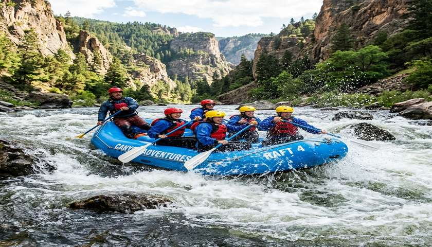

Nossa missão é proporcionar experiências de rafting inesquecíveis e seguras em corredeiras incríveis, unindo paixão pela natureza, aventura e o mais alto padrão de segurança para nossos clientes e amigos.

White Water Rafting
História
Fundada em 2010 por entusiastas dos esportes radicais, a White Water Rafting começou com um pequeno barco e a grande visão de compartilhar as emoções do rio com o mundo. Ao longo dos anos, expandimos nossas rotas, equipamos nossos guias com as melhores formações internacionais e transformamos milhares de aventureiros em apaixonados pelo rafting.